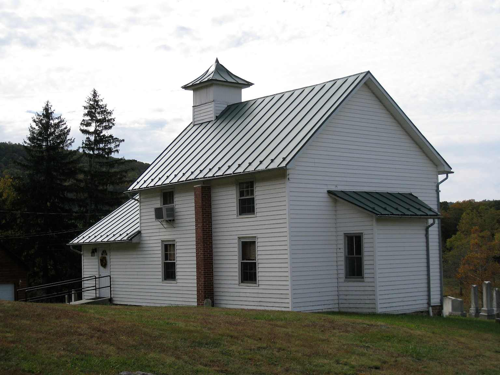

Welcome to Bloomery Presbyterian Church
Serving the Bloomery, WV community since 1825. Join us for worship, fellowship, and a rich heritage of faith.
Sunday Worship: 10:00 AM
127 Bloomery Pike, Bloomery, WV 26817
All are welcome!